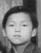

光
惠光 名迎睦 = 李月嫦
Fì Göng [Ngẽin Mùk] = Lī Ngùt Sẽng
Huìguāng [Yíngmù] = Lǐ Yuècháng
Ying Muk =
前
錫群
Xēik Kǔn
Xīqún
錫韶
Xēik Sêl
Xīsháo
| 148,107,60,25 光 |
惠光 名迎睦 = 李月嫦 Fì Göng [Ngẽin Mùk] = Lī Ngùt Sẽng Huìguāng [Yíngmù] = Lǐ Yuècháng Ying Muk = |
|||||||
|---|---|---|---|---|---|---|---|---|
| 149,108,61,26 前 |
|
錫群 Xēik Kǔn Xīqún |
 錫韶 Xēik Sêl Xīsháo |
|||||
李月嫦 Lī Ngùt Sẽng (Lǐ Yuècháng) is from 流蓢 (Liúláng） Liulong Village.